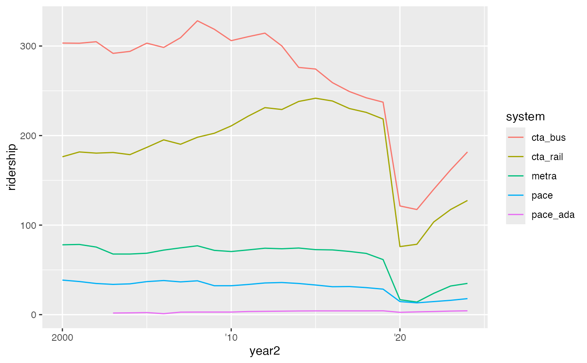

`abbr_years()` is a helper functions that allows users to abbreviate year
labels to their two-digit representation (e.g., 2008 to '08), but not
abbreviating any specified breaks. It does so by creating a new function that
takes the breaks supplied by ggplot2 as its only argument. The
function was modeled after the syntax and approach of the labeling functions
in the scales::label_* family.
abbr_years(full_by_pos = c(1), full_by_year = NULL, dateaxis = FALSE)
Arguments
| full_by_pos | Vector of integers, the position of breaks that should not
be abbreviated. This defaults to |
|---|---|
| full_by_year | Vector of integers, the value of breaks that should not be abbreviated. Defaults to NULL. |
| dateaxis | Bool. |
Examples
#> [1] "2010" "'11" "'12" "'13" "'14" "'15" "'16" "'17" "'18" "'19" #> [11] "'20"#> [1] "1990" "'91" "'92" "'93" "'94" "'95" "'96" "'97" "'98" "'99" #> [11] "2000" "'01" "'02" "'03" "'04" "'05" "'06" "'07" "'08" "'09" #> [21] "'10"# Default implementation - this will abbreviate all labels except the first # for both continuous and date scales. df2 <- dplyr::mutate(transit_ridership, year2 = as.Date(lubridate::date_decimal(year))) df1 <- dplyr::filter(df2, year >= 2000) ggplot(df1, aes(x = year, y = ridership, color = system)) + geom_line() + scale_x_continuous(labels = abbr_years())#> Warning: Removed 7 row(s) containing missing values (geom_path).ggplot(df1, aes(x = year2, y = ridership, color = system)) + geom_line() + scale_x_date(labels = abbr_years(dateaxis = TRUE))#> Warning: Removed 7 row(s) containing missing values (geom_path).# If customizations are desired, users can use \code{full_by_pos} and/or # \code{full_by_year} to maintain the full version of the specified labels. ggplot(df2, aes(x = year2, y = ridership, color = system)) + geom_line() + scale_x_date(labels = abbr_years(full_by_year = c(2000), dateaxis = TRUE))#> Warning: Removed 27 row(s) containing missing values (geom_path).# You can also remove the default maintenance of the first label and only # specify specific years. ggplot(df2, aes(x = year, y = ridership, color = system)) + geom_line() + scale_x_continuous(labels = abbr_years(full_by_pos = NULL, full_by_year = c(1990,2020)))#> Warning: Removed 27 row(s) containing missing values (geom_path).